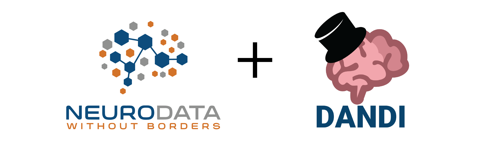

NWB and DANDI Workshop Hosted by the University of Washington
Dates: April 7-8, 2025
Location: South Campus Center (SOCC) 354, University of Washington, Seattle, WA
Instructors:
- Benjamin Dichter, Founder & CEO, CatalystNeuro
- Ryan Ly, Scientific Data Engineer, Lawrence Berkeley National Laboratory
Join us for an interactive workshop on Neurodata Without Borders (NWB), a data standard for neurophysiology, and the DANDI Archive, a collaboration platform for publishing, sharing, and processing neurophysiology data. Learn how to use these resources to maximize the impact of your data while complying with the new NIH data sharing and management policies.
Target Audience
This workshop is designed for neuroscience researchers at all career stages, from undergraduate students working in labs to graduate students, post-doctoral researchers, and principal investigators. No prior programming experience is required.
Agenda
April 7, Day 1: NWB and DANDI Training
11am - 12pm: Open Neurophysiology with NWB and DANDI
Overview session suitable for all attendees, including lab leaders
- Introduction to NWB and DANDI ecosystems
- NWB core format fundamentals
- Available conversion tools
- NWB extensions system
- Analysis and visualization toolkit
- Data reuse capabilities
- Upcoming NWB community events
1 - 3:30pm: Technical Implementation
Detailed session for hands-on implementers
Data Conversion
- NWB GUIDE walkthrough
- NeuroConv tutorial
- PyNWB and MatNWB API usage
- Creating custom extensions
DANDI Publication
- Data upload workflow
- DANDI metadata requirements
- Neurosift visualization tools
- DANDI API implementation
Data Analysis
- DANDI dataset discovery
- NWB file handling
- Analysis workflow examples
- Visualization techniques
- Reproducibility best practices
April 7, 6 - 6:45pm: Undergrad-focused intro to NWB & DANDI (with pizza!)
- Open data in neuroscience
- What is NWB and DANDI
- How to find and use relevant datasets
April 8, Day 2, 10am - 3pm: NWB and DANDI Hacking
Hands-on Workshop with Your Data
- One-on-one assistance with:
- Data conversion to NWB
- Custom extension development
- DANDI data publication
- Data management optimization
Prerequisites
- No prior programming experience is required
- For Day 2, participants should bring their own neurophysiology data they wish to convert to NWB format
Registration
Please register here to receive announcements about this event.
Questions?
For any questions about the workshop, please contact the organizers.